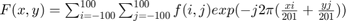
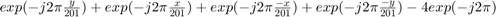
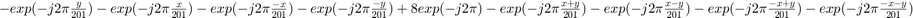
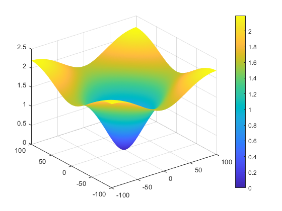
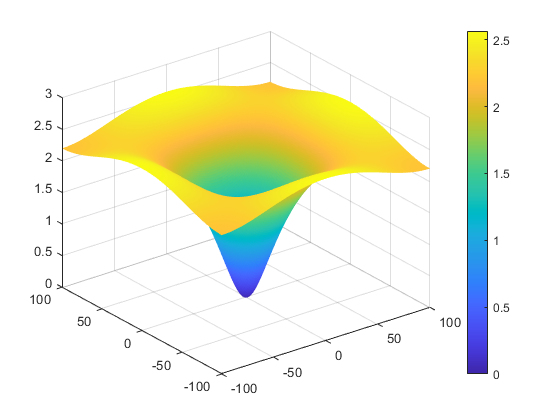

Q6
Contents
DFT Calculation Algorithm
In order to calculate N,N point DFT given a matrix of size 3, for N=201 we create a 0 padded representation of the input signal with padding of size 99. Then to calculate N,N point DFT we can calculate N point DFT along rows followed by N point DFT along columns (or vice versa). This can represented in a double summation as follows- 
Therefore for k1 the DFT is-

DFT for k2 is -

DFT Calculation Code
clear; k1 = [0 1 0;1 -4 1;0 1 0]; k2 = [-1 -1 -1;-1 8 -1;-1 -1 -1]; k1pad = padarray(k1,[99 99]); k2pad = padarray(k2,[99 99]); k1_fourier = fftshift(fft2(k1pad)); k2_fourier = fftshift(fft2(k2pad)); %Alternatively using the fft function's inbuilt N point DFT %k1_fourier = fftshift(fft(fft(k1,201).',201).'); %k2_fourier = fftshift(fft(fft(k2,201).',201).'); log_fourier_k1 = log(abs(k1_fourier)+1); log_fourier_k2 = log(abs(k2_fourier)+1);
Filter 1 plot
Z1 = log_fourier_k1;
[X,Y] = meshgrid(-100:100);
s1 = surf(X,Y,Z1);
s1.EdgeColor = 'none';
colorbar
 Filter 2 plot
Z2 = log_fourier_k2;
s2 = surf(X,Y,Z2);
s2.EdgeColor = 'none';
colorbar
 Comparison between plots
Both of these filters are negative discrete approximations of the Laplacian Filter used often as unsharp masks, though the k2 mask is sharper/less smooth than the k1 mask.